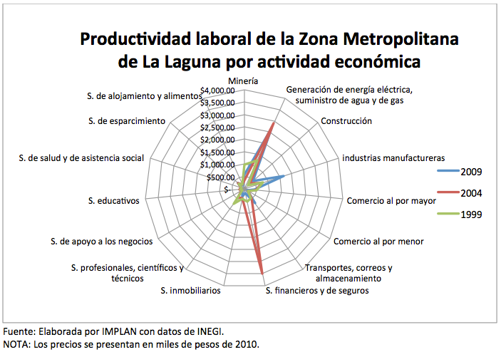
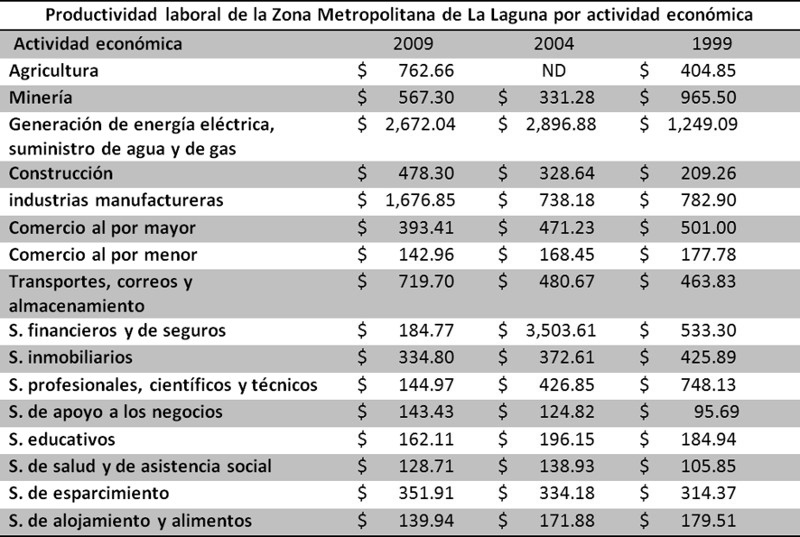
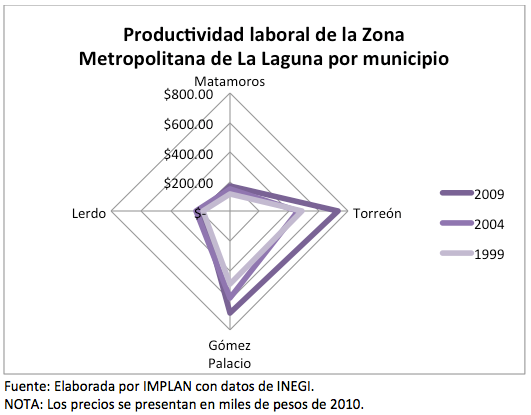
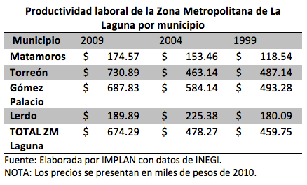
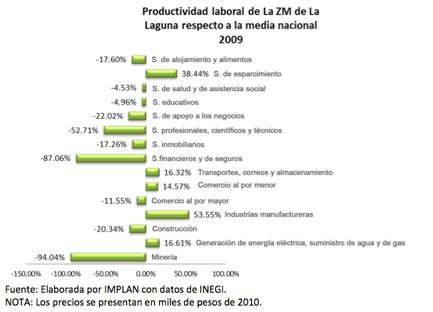
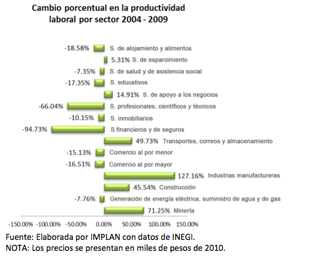
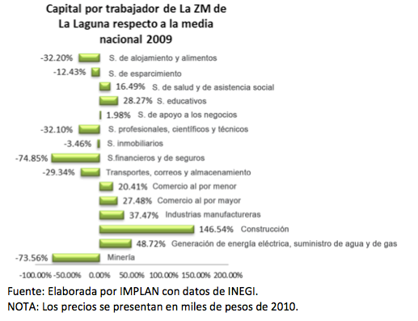
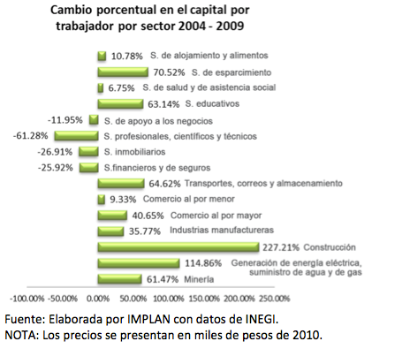
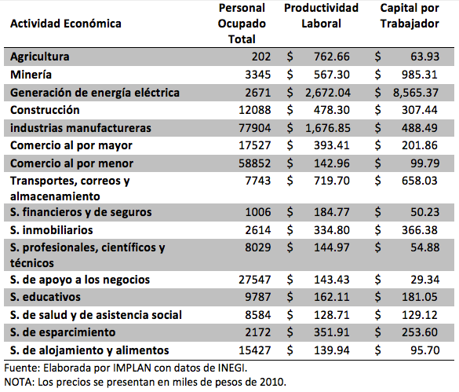
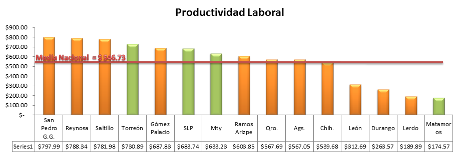

En 2011 el Centro de Investigación para el Desarrollo, A.C. (CIDAC) publicó el Índice de Productividad México, en el cual Coahuila califica en tercer lugar de las 32 entidades de la república según su eficiencia en el uso de los insumos de trabajo y capital.
CIDAC no realiza estudios de productividad a nivel municipal, sin embargo sí nos comparte su metodología, lo que nos permite realizar este análisis sobre la productividad en los municipios de la Zona Metropolitana de La Laguna.
En la gráfica y tabla inferiores se muestran los resultados del cálculo de productividad por sector de la zona y su comportamiento en el tiempo. Algunas observaciones relevantes son el aumento considerable de la productividad de los servicios financieros en el 2004 seguida por una gran disminución en 2009, así como el aumento de la productividad en la Industria manufacturera en 2009.
 Calculando ahora la productividad laboral por municipio encontramos a Torreón como el más productivo en el año 2009, a pesar de ser el único en presentar disminución en el 2004.
 En 2009 la actividad económica de la zona con mejor desempeño respecto a la media nacional fue la industria manufacturera, con una productividad 53.55% mayor a la media nacional.
La industria manufacturera presentó también la mayor tasa de crecimiento entre 2004 y 2009, seguida por el sector de transporte y almacenamiento. Las tasas de dichos sectores fueron de 127.16% y 49.73% respectivamente.
En cuanto a la eficiencia de capital, el sector con mayor desempeño respecto a la media nacional fue el de construcción, colocándose 146.54% arriba de ella.
El sector de construcción presentó la mayor tasa de crecimiento de 2004 a 2009, en cuanto al capital por trabajador, la cual fue de 227.21%.
De las gráficas anteriores notamos que los sectores con mayor eficiencia en el insumo de trabajo no son necesariamente los de mejor eficiencia en el capital. En la siguiente tabla hacemos la comparativa para el año 2009:
Por último, al comparar los municipios de la zona con otras ciudades de la república, San Pedro Garza García es el número uno en productividad, seguido por Reynosa y Saltillo, mientras Torreón ocupa el cuarto lugar con 730 mil pesos por trabajador:
